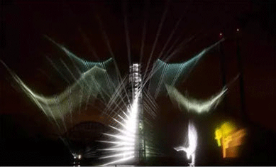
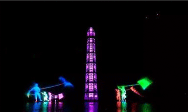
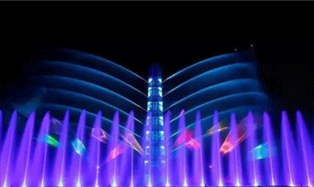

上海欢乐谷大型实景水秀《天幕水极》
2017-07-01 7 21
《天幕水极》运用声、光、电、火、水、影、乐等元素展现了一场“天地初开、永恒之剑”的中国神话大剧。整场演出20分钟通过序曲、乾坤颠倒、乘波而行、混沌初开、万物静谧、广阔无垠、无限可能、终曲等8幕情节、特效的层层递进，充分调动游客的无限想象力，演绎出“天人合一、万物皆形”的中华古典文化。同时，专门打造了“4+7”的立体环绕式矩阵音效系统，天籁传声，灵韵交响，带给游客极致的影音盛宴。
-

《天幕水极》由法国阳狮集团旗下的世界著名艺术特效公司--ECA2团队设计、执导，代表全球水上实景演出的最高水准。该团队曾打造过1998年世界杯开闭幕式、2000年埃菲尔铁塔焰火表演、北京奥运会开闭幕式、上海世博会开幕式等演出特效。
-

为了更好地呈现这场盛大的跨媒体实景水秀，法国ECA2公司耗时1年创新研发出全新特效“漩涡屏幕”,使用旋转喷头打造出巨型幻影屏幕，用于表现前所未见的影像、灯光和激光效果。同时，“1个总控室+5个辅助用房”的专业配置，实现音乐、喷泉、全彩激光、水幕、3D影像、焰火等多维无缝融合，为游客呈现水火交融、流光电影、时空穿越的全感官浸入式震撼体验。
-

近30000平米中心大湖的水面耸立着一座32米高、倾斜15°的多媒体斜塔。这座主建筑多媒体塔“时光之剑”为全球首创，是ECA2为这场水秀量身定制的一个地标建筑。白天是一个高耸入云的励志雕塑；夜晚化身为纵横光影的天地之界，在即将推出的大型跨媒体实景水秀《天幕水极》中发挥连接水天的作用，为游客呈现2000平米全景巨型水幕，打造一场由科技、建筑、传说共同构成的炫奇演出。